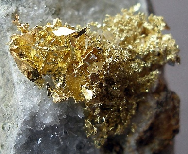

NACION | OPINION | ECONOMIA | VIDA MODERNA | GENTE | CULTURA | MUNDO | TECNOLOGIA | EDUCACION | DEPORTES | EDICION IMPRESA | SOSTENIBILIDAD |
| Cuando los españoles llegaron a nuestro país, ellos iban en busca del “Dorado”, saqueaban. Ya después de un tiempo, Colombia es un país con muchas minas dedicadas al oro, el problema es que hay muchas dedicadas a la minería ilegal por las cuencas del rio Magdalena, estas minas ilegales no solo se dedican al oro, si no a otros metales, como el mercurio. Esto no solo contamina las aguas, sino que también destruyen los hábitats naturales ya que de tanto dañar el entorno, gracias a las retroexcavadoras en el lugar ya no queda nada, parece la luna, afirma Josu Yunis , representante para Colombia TNC.
En las minerías ilegales también se están trabajando los metales pesados, de los que más contaminan y que se pasan al pescado, y muchas personas se dedican a esto ya que es el único empleo seguro en esa zona. A pesar de que el gobierno interviene intentando cerrar las minas ilegales, no se ha podido acabar con estas. El oro se ha acabado, ya no hay tanto como antes, pero los demás metales son los que hacen que los mineros se queden. Cerca de las minas ilegales hay fuentes hídricas donde hay ríos, arroyos y al hacer esta actividad destruyen las fuentes de agua, también a veces en las tolvas hay trampas para el oro donde esta unidos con la magnetita, en esas trampas el material para a través de varios filtros impregnados de mercurio el cual es usado para limpiar las impurezas del oro.

|
| NOTICIAS ANTERIORES | 1 | 2 | 3 | 4 | 5 | >> | >| |